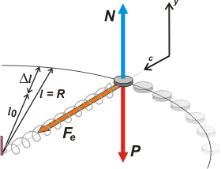

|
NO ME SALEN
PROBLEMAS RESUELTOS DE FÍSICA DEL CBC
|
|

|
| 2.29- En el esquema de la figura, el cuerpo de
5 kg se mueve apoyado en una mesa horizontal
con rozamiento despreciable, sujeto al extremo
de un resorte de constante elástica 1000 N/m, cuya
longitud sin carga es 20 cm. |
 |
|
a- ¿Cuál es la longitud del resorte, cuando el
cuerpo gira dando dos vueltas por segundo?
Considerar que la trayectoria es una circunferencia
y despreciar la masa del resorte.
b- Expresar la segunda ley de Newton para el
caso general de una masa unida a un resorte de
constante elástica k y cuya longitud relajado es
l0, cuando gira como se indica en la figura y con
una velocidad angular ω. Despejar la longitud l
en función de ω y encontrar el rango de valores
posibles de ω para que gire con movimiento circular
uniforme.
No podemos hacer absolutamente nada si antes no me confesás que entendés que te parece razonable que mientras el cuerpo está girando el resorte esta estirado. Es más... quiero que me informes por escrito y con firma certificada que te das cuenta plenamente de que cuanto más rápido gire el cuerpo, más estirado debe estar el resorte... (y también... por lo tanto, mayor es el radio de giro).
Ok... entonces... sólo entonces... hagamos el DCL. |
|
|
Vamos a Newton
N — P = 0
Fe = m ac
la primera ecuación no aporta nada relevante, pero la segunda sí. Además sabemos que esa fuerza elástica Fe, tiene naturaleza propia, obedece la ley de Hoocke.
Fe = k Δl
(El signo de Fe ya fue puesto por el sistema de referencia, ya Hoocke no lo puede cambiar). Podemos igualar esta ecuación con la segunda, y nos queda |
 |
|
|
|
m ac = k Δl
metamos en esta última ecuación la información que razonamos en el esquemita que acompaña al DCL, o sea que
R = l = l0 + Δl
de donde
Δl = R — l0 = l — l0
recordemos, además que
ac = ω² . R
Ok, ahora sí, metemos todo esto en la licuadora...
m ω² l = k ( l — l0)
hay que despejar l
m ω² l = k l — k l0
m ω² l — k l = — k l0
l ( m ω² — k ) = — k l0
l = — k l 0 / ( m ω² — k )
l = k l0 / ( k — m ω²)
Ya me pudrí... hagamos números teniendo en cuenta que ω = 2π ƒ y ω² = 4𲃲
l = k l0 / ( k — m 4 π2 ƒ²)
|
|
No dejes de leer esta ADVRTENCIA de
No me salen |
|
|
|
| la pregunta b) ya la pasamos por alto durante el desarrollo, era ésta: |
|
|
| |
l = k l0 / ( k — m ω²) |
ésta es la b) |
|
|
|
| Y nos dice que si ( k — m ω²) es mayor que cero el problema tiene solución o sea existe una longitud para la cual el cuerpo gira con MCU. Pero a medida que la velocidad angular crece y m ω² se acerca al valor de k, la longitud se hace cada vez más y más grande. Cuando m ω² alcance el valor de k, el denominador de la expresión será cero, la longitud habrá crecido hasta el infinito... y más alláaaa... |
|
|
| |
|
|
| DISCUSION: Bueno, el párrafo anterior es la parte más importante de la discusión, que en este caso (insólito) pedía el enunciado del problema. Podemos agregar el análisis dimensional: ¿todas las partes de la expresión tienen las unidades correctas? |
|
 |
| DESAFIO: ¿Cuánto valdrá el estiramiento del resorte cuando el período de giro sea medio segundo? |
|
| Algunos derechos reservados.
Se permite piratear citando la fuente. Última actualización oct-06. Buenos Aires, Argentina. |
|
|
|